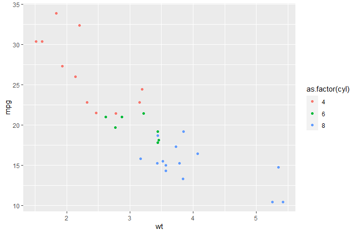
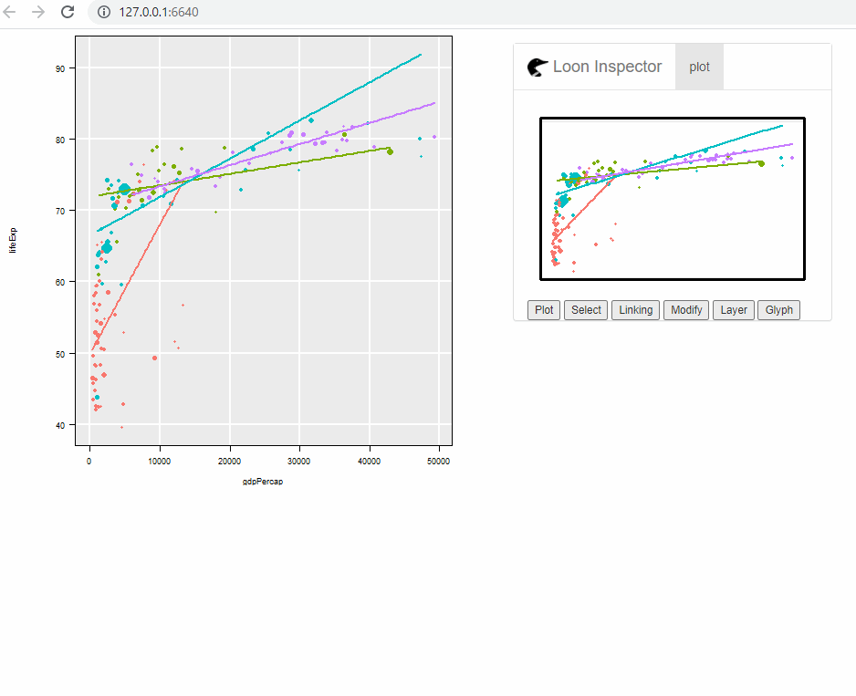

An R package to turn ggplot graphic data structures into interactive loon plots. Extends the grammar to add interactivity.
Documentation: https://great-northern-diver.github.io/loon.ggplot/
Introduction
The ggplot2 graphics package (part of the tidyverse package collection) uses the base grid graphics package to produce publication quality graphics for data analysis. Based on a grammar for graphics, ggplot2 also provides a lot of functionality (e.g. facets) that can be extremely useful in data analysis.
The loon graphics package provides interactive graphics especially valuable in any exploratory data analysis. This includes programmatic and direct manipulation of the visualizations to effect interactive identification, zooming, panning, and linking between any number of displays. Of course, loon also provides publication quality static graphics in grid via loon’s functions grid.loon() and loonGrob().
The loon.ggplot package brings both these packages together. Data analysts who value the ease with which ggplot2 can create meaningful graphics can now turn these ggplots into interactive loon plots for more dynamic interaction with their data. Conversely, data analysts who explore data interactively can at any time turn a snapshot of their interactive loon plots into ggplots. The former is accomplished by the simple translation function ggplot2loon() and the latter by the simple translation function loon2ggplot().
An interactive grammar
loon.ggplot extends the grammar of graphic to include interactive clauses:
+ linking()+ hover()+ selection()+ active()+ zoom()+ interactivity()
A ggplot() created with any of these clauses (in addition to the usual grammar) will print() as an interactive loon plot and plot() as a static ggplot.
Install from R
Just as the tidyverse includes ggplot2, the package suite called diveR includes loon.ggplot and many more interactive visualization packages.
Installing diveR from CRAN will include installing loon.ggplot:
install.packages("diveR")Alternatively, loon.ggplot (and its dependencies) may be installed directly
Examples
More detail is given in the vignettes, especially "A Grammar Of Interactive Graphics" and "There And Back Again".
Below functions transforming from a ggplot to a loon plot, and from a loon plot to a ggplot, are demonstrated.
ggplot2loon(): ggplot –> loon
- Construct
ggplot
Consider the mtcars data set. Suppose we draw a scatterplot of the mileage mpg (miles per US gallon) versus the weight of the car wt in thousands of pounds and colour represents different cylinder numbers. In ggplot2 this would be constructed as
library(ggplot2)
p <- ggplot(mtcars, aes(wt, mpg, colour = as.factor(cyl))) + geom_point()
p
We might also display a histogram of some other variate, say the engine’s horsepower hp. In ggplot2 this would be constructed as
h <- ggplot(mtcars, aes(x = hp, fill = as.factor(cyl))) + geom_histogram()
h
- To
loon
the "ggplot" data structures p and h can be turned into interactive loon plots using the ggplot2loon() function:
library(loon.ggplot)
pl <- ggplot2loon(p)
hl <- ggplot2loon(h)
An alternative way of doing so is to replace ggplot() function to l_ggplot() function. Then, follow the pipe rules of ggplot() but get a loon plot.
# the scatter plot
l_ggplot(mtcars, aes(wt,
mpg,
colour = as.factor(cyl))) +
geom_point()
# the histogram
l_ggplot(mtcars, aes(x = hp, fill = as.factor(cyl))) +
geom_histogram()Note that:
Loon “Hello World”: Introduction to interactive
loonplots can be found via loon. It shows how to create, manipulate (selection, linking and etc)loonplotsloon.ggplottalk: A talk “Interactive ggplots in R” has been given in SDSS 2019. Slides can be found in SDSS2019/loon.ggplot talk which gives more details.ggmatrixobject in packageGGallycan also be converted to aloonwidget. Seehelp(ggplot2loon)for more info.
loon2ggplot(): loon –> ggplot
After creating loon plots and adding programmatic and direct manipulation of the visualizations to effect interactive identification, function loon2ggplot can be applied to return a static ggplot
pg <- loon2ggplot(pl)
hg <- loon2ggplot(hl)Note that pg and hg are ggplot objects.
class(pg)
[1] "gg" "ggplot"
class(hg)
[1] "gg" "ggplot"Layers, theme adjustment can be piped though like:
pg +
ggplot2::geom_smooth() +
ggplot2::ggtitle("Mtcars")
hg +
ggplot2::geom_density() +
ggplot2::coord_flip()
Note that:
Compound loon widget like
l_tsandl_pairsare created byggmatrixinGGally. Ggplot features liketheme,labelscan be piped through but byggmatrixrule.-
Some functionalities are provided
- Adding glyphs on scatterplot like
geom_serialAxesGlyph(),geom_polygonGlyph(),geom_imageGlyph()and etc. - Providing serial axes plots (parallel coordinate and radial coordinate) via
ggSerialAxes()
- Adding glyphs on scatterplot like
loon.ggplot(): loon <–> ggplot
loon.ggplot() gathers features of both loon2ggplot() and ggplot2loon(). It can take either a loon widget or gg object and transform back and forth.
p <- l_plot(iris)
# `loon` to `gg`
g <- loon.ggplot(p)
g <- g + geom_smooth(method = "lm") + theme_bw()
g
# `gg` to `loon`
l <- loon.ggplot(g)
More than loon or ggplot2
More than connecting ggplot2 and loon these two specific graphical systems, loon.ggplot is able to connect the suite behind them.

loon –> ggplot2 –> gganimate
Return an animation from a loon plot
# a loon plot
library(gapminder)
p <- with(gapminder,
l_plot(gdpPercap, lifeExp,
# scale the size into certain amounts
size = scales::rescale(pop, to = c(4, 50)),
color = continent,
itemLabel = as.character(country),
showItemLabels = TRUE
))
# highlight large population countires
library(dplyr)
top10in2007 <- gapminder %>%
filter(year == 2007) %>%
top_n(10, pop)
p['selected'][gapminder$country %in% top10in2007$country] <- TRUE
# to `ggplot` then to `animation`
library(gganimate)
loon.ggplot(p, selectedOnTop = FALSE) +
facet_wrap(gapminder$continent) +
theme(legend.position = "none") +
labs(title = 'Year: {frame_time}',
x = 'GDP per capita',
y = 'life expectancy') +
transition_time(gapminder$year) +
ease_aes('linear')
ggplot2 –> loon –> shiny
Return a shiny web app from a ggplot object
library(dplyr)
gp <- gapminder %>%
filter(year == 2007,
continent != "Oceania") %>%
ggplot(mapping = aes(gdpPercap, lifeExp,
colour = continent)) +
geom_point(mapping = aes(size = pop)) +
geom_smooth(mapping = aes(weight = pop),
method = "lm",
se = FALSE)
library(loon.shiny)
gp %>%
loon.ggplot() %>%
loon.shiny()